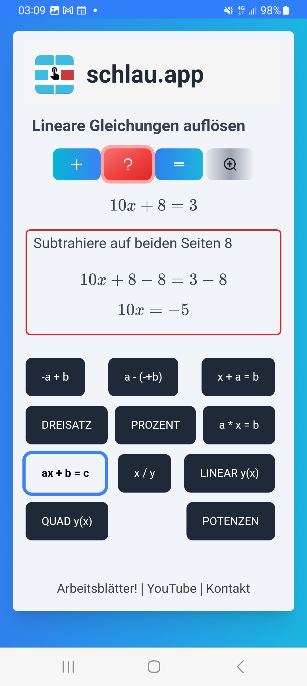

Das Auflösen von Gleichungen der Art a · x + b = c brauchst du in Mathe oft: zum Beispiel, wenn es um quadratische Funktionen oder lineare Gleichungssysteme geht. Außerdem kommen lineare Funktionen in der Physik vor, z.B. in der Form s = s0 + v · t. (s: zurückgelegte Strecke, v: Geschwindigkeit, t: Zeit)
Wenn du mit schlau.app an dieses Mathethema rangehst, solltest du dir in anderen Bereichen sicher sein, die du mit schlaup.app auch üben kannst, z.B. Plus-minus-Umstellen und Mal-geteilt-Umstellen.
Hier ein Beispiel für eine Aufgabe, den Hilfetext, die Lösung und den Erklärtext für den ersten Schritt:
Schau dir die Hilfs- und Erklärtexte immer an (roter und grauer Button). Die Erklärtexte sind unterschiedlich: mal wird ein Schritt genauer erklärt, mal werden Beispiel gegeben (wie bei dieser Aufgabe) und mal sind es Mathe-Tricks und Rechenregeln zum Merken.
Rechne viel Beispiele mit schlau.app. Rechne alles schriftlich, schreibe auch die Aufgabe nochmal hin. Vertausche mal als Übung die Seiten der Ausgangsgleichung: das Ergebnis muss dasselbe sein. Oder wechsle alle Vorzeichen der Gleichung (d.h. du multiplizierst beide Seiten mit -1): das Ergebnis muss wieder dasselbe sein. Hier z.B.: